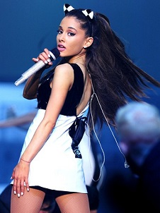

|
My Everything
es el segundo álbum de estudio de la artista estadounidense
Ariana Grande, lanzado el 25 de agosto de 2014 a través de la compañía discográfica Republic Records.
Frente a este nuevo gran reto la artista confesó:
«Es un disco que yo quiero hacer algo diferente. No quiero que suene como una extensión de Yours Truly. Quiero que suene como una evolución. Quiero explorar
más sonidos y experimentar un poco. Tengo un montón de ideas que estoy muy entusiasmada y un montón de cosas de cocina». (Para más información dirigirse a
2014-2017 My Everything, gira mundial y otros trabajos).
The Honeymoon Tour
fue la primera gira mundial de la cantante, y la segunda en general. Incluyó conciertos en
América, Europa y Asia para promover su segundo álbum de estudio My Everything,
del 2014. La gira inició el 25 de febrero de 2015 en
Independence/Estados Unidos y finalizó el 25 de octubre de 2015 en
São Paulo/Brasil.
The Honeymoon Tour encabezó el resumen semanal de Hot Tours el 30 de abril de 2015 por $14 millones de entradas vendidas de veinticinco conciertos
de la etapa de
Norteamérica entre febrero a mediados de abril. A finales de 2015,
la gira se colocó en el número 40 en la lista de
"Top 100 Worldwide Tours"
de
Pollstar, recaudando $ 41,8 millones con 81 conciertos realizados, con una asistencia total de 808.667 personas.
|

|